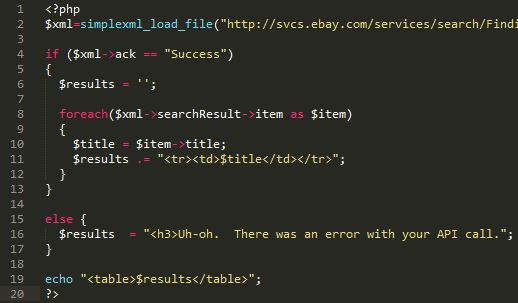

Now that we have our API call setup how we want it, next we have to deal with the XML output that eBay’s system responds with. For this example, we will be using a simple PHP program to show how to break down the mass of data returned in the XML.
Here is the simple PHP program:
A quick breakdown of what is going on here.
Line 2 – The simplexml_load_file function turns eBay’s XML response into a manageable object we can reference. All of the data will be stored in the $xml variable.
Line 4 – We need to check if our call is successful by checking if ack equals Success. Any other response and things are not working as they should be and an error message will be printed.
Lines 6-12 – Here we create a $results variable where we will be storing all of the individual data points. We then use a foreach loop to step through every individual item contained in the Search Results XML response. At this point, you can access any of the item parameters, but for this example we will just take the title and save it in our results variable. Once the loop is complete, the program will print out a simple table with the titles for every sold half dollar that has been graded by PCGS or NGC.
Sign up for your developer account and make your first API call
Learn how to create your own API call
Limit the data returned by your call
How to deal with the data eBay's API returns
Saving the XML into a MySQL database